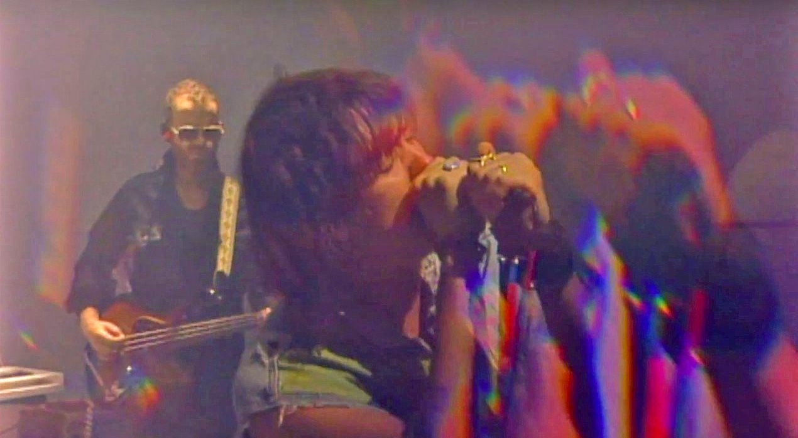

Bienvenido a mi blog!!

En el blog de hoy hablaremos sobre The Voidz. Esta es una banda creada por el cantante Julian Casablancas,
el cual quizas puedas reconocer por su participación como vocalista en The Strokes.
Esta banda ha ofrecido canciones de muy buena calidad, pero hay unas en especial que siento que merecen un
espacio en el cual las podamos analizar.
Human Sadness puede ser considerada la revelación de una muy buena música
ya que aún con su larga duración logro cautivar a los seguidores de la banda desde el lanzamiento de su
primer disco "Tyranny" el 23 de septiembre del 2014.
Leave It In My Dreams y Pointlessness
son del segundo disco de la banda "Virtue", el cual fue lanzado el 30 de marzo del 2018.
A diferencia de las últimas tres canciones Did My Best y
Alien Crime Lord
tienen en común que son sencillos más recientes
de The Voidz, Did My Best públicado el diciembre del 2019 y Alien Crime Lord como una colaboración
con el videojuego Grand Theft Auto.